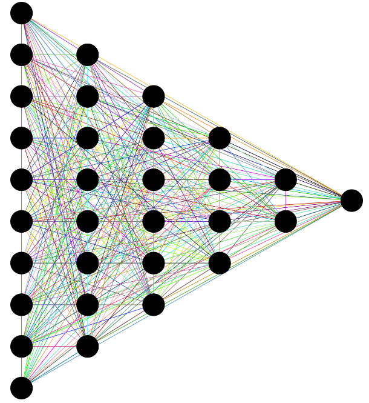

| 과제명 | 사업명 | 주관 기관 |
|---|---|---|
| 해양 침적 쓰레기 이미지 AI 데이터 구축 (Sonar 이미지 활용) | 인공지능 학습용 데이터 구축 | 한국정보화진흥원 |
| GAN 기간 뇌졸중 영상 학습데이터 생성 및 영상분할기법 연구 | 이공분야기초연구사업 | 한국연구재단 |
| 하둡과 딥러닝을 이용한 스마트팩토리 빅데이터 분석 시스템 | 산학연협력기술개발 | 중소기업청 |
| AR을 적용한 훈련용 CPR System | 산학연협력기술개발 | 중소기업청 |
|  |
Deep Learning Technology Currently, deep learning is a technology that is in the spotlight in various fields. We use deep learning effective in processing images such as object detection and image segmentation to improve research results. |
|
|
Making of pedestrian dataset by GAN GAN is a deep learning technology that generates data and is widely used in many fields, such as medicine and fashion, where data is scarce. We are researching with the aim of creating pedestrian images using GAN. |
||

|
3D Object detection using center-net with Kitti dataset Centernet is the most recently proposed network with high accuracy and high speed. We use centernet model and train the kitti 3D dataset to detect 3D objects. Research is being conducted with the aim of improving performance of centernet by using different methods that combines several technologies. |
|
|
Landmark detection on fashion domain We utilized deep learning to perform landmark detection, which is widely used in fashion. This experiment was performed by adding keypoints to the efficientnet, and used the fashion 2 dataset. |
||

|
Deformable models: Image segmentation is a principal research direction in image processing and is widely used in image analysis, medical imaging and computer vision. Active contours are deformable models and used in many domains especially in medical image analysis. We use different active contour models such as Edge based active contours, Region based active contours, and Hybrid active contours for the segmentations of complex objects. Our main research included breast tumor detection, MRI brain image segmentation, skin lesion segmentation etc using active contours models. We published many international journal's and conference's papers related to Active contour models. |
Room 318, Building 208,
Chung-Ang University,
Seoul, South Korea.
knchoi (at) cau.ac.kr